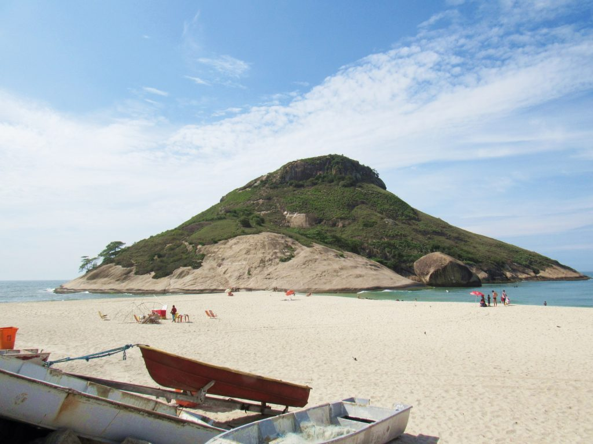

A Pedra do Pontal é um dos pontos mais altos da Zona Oeste do Rio de Janeiro, oferecendo vistas panorâmicas incríveis da cidade e do oceano. A trilha até o topo é desafiadora, mas a recompensa vale a pena.
Detalhes da Trilha
- Dificuldade: Moderada a Alta
- Duração: Aproximadamente 3-4 horas
- Distância: Cerca de 6 km (ida e volta)
- Ponto de Partida: Estrada do Pontal, Recreio dos Bandeirantes
Dicas para a Trilha
- Leve bastante água e lanches energéticos.
- Use calçados apropriados para trilhas íngremes.
- Considere ir com um guia local para maior segurança.
- Respeite a natureza e leve seu lixo de volta.